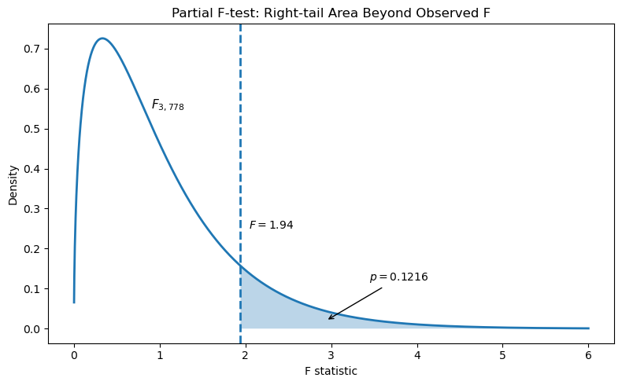

Inferences for Multiple Linear Regression
Objectives
- Interpret inferential statistics for various types of regression models, including those with indicator variables, quadratic terms, and interaction terms.
- Interpret and communicate results from a multiple regression analysis.
Multiple Linear Regression (MLR) with a Single Predictor: Polynomial Regression
- This is still considered a linear model.
- It can capture curvilinear trends.
- It is linear in the \(\beta_i X^j\) term: for every one-unit increase in \(X^j\), \(Y\) changes by a constant \(\beta_i\).
- If the quadratic coefficient is significant but the linear term is not, the linear (lower-order) terms should still be included because they form a singular idea.
- Interpretation can be difficult, especially with higher-order terms.
- It can capture curvilinear trends.
- In interpreting a quadratic model:
- The vertex (absolute maximum or minimum) can be found using: \[ x_{\text{vertex}} = \frac{-\beta_1}{2\beta_2} \]
- This value of \(X\) represents the point at which \(Y\) stops increasing or decreasing, based on the quadratic regression model.
Coefficient of Determination (\(R^2\))
- \(R^2\) is a measure of effect size for both simple linear regression (SLR) and MLR.
- It represents the proportion of variance in the response variable explained by the model.
Calculation in MLR
- Multiple \(R^2\): This is the squared correlation between the observed values of \(Y\) and the predicted values of \(Y\).
- Partition of sums of squares: The total variation in \(Y\) (\(\text{SS}_{\text{total}}\)) can be split into the variation explained by the model (\(\text{SS}_{\text{regression}}\)) and the variation left unexplained (\(\text{SS}_{\text{residual}}\)): \[ \text{SS}_{\text{total}} = \text{SS}_{\text{regression}} + \text{SS}_{\text{residual}} \] This partition leads to: \[ R^2 = \frac{\text{SS}_{\text{total}} - \text{SS}_{\text{residual}}}{\text{SS}_{\text{total}}} = \frac{\text{SS}_{\text{regression}}}{\text{SS}_{\text{total}}} = 1 - \frac{\text{SS}_{\text{residual}}}{\text{SS}_{\text{total}}} \]
Relationship with the Overall F-test
- The F-test statistic can be rewritten in terms of \(R^2\).
- Testing whether all parameters equal zero is equivalent to testing whether \(R^2 = 0\).
\(R^2\) and Parsimony
- Adding more predictors will always increase \(R^2\).
- An oversaturated model can have \(R^2 = 1\) even if the predictors do not contribute meaningfully.
- The goal is to create a parsimonious model—one that is as simple as possible while still maximizing \(R^2\).
Adjusted \(R^2\)
- Adjusted \(R^2\) accounts for the number of predictors (\(k\)) and the sample size (\(n\)).
- The formula is: \[ R^2_{\text{adj}} = R^2 - (1 - R^2) \frac{k}{n-k-1} \]
- Adjusted \(R^2\) penalizes unnecessary predictors and small sample sizes.
- It rewards variables that significantly improve model fit, resulting in a net increase if a predictor explains a substantial proportion of the variance.
- It is generally a better measure of effect size than \(R^2\) in MLR.
Overfitting
- A value of \(R^2\) equal to 1 can always be achieved, but this does not indicate good predictive power.
- Overfitting occurs when the model fits both the noise and the signal in the sample data.
- A high \(R^2\) value does not guarantee that the model will generalize well to new data.
Controlling for Other Variables in MLR
- When we hold \(X_2\) constant (i.e., look at a subpopulation with similar \(X_2\) values), we can examine the effect of changes in \(X_1\) on \(Y\).
Overall F-test
- The overall F-test evaluates whether the model is statistically significant.
- Hypotheses:
- \(H_0\): All slopes are equal to 0 (i.e., \(R^2 = 0\)).
- \(H_a\): At least one slope is not zero.
- \(H_0\): All slopes are equal to 0 (i.e., \(R^2 = 0\)).
- F-statistic formula: \[ F = \frac{\text{SS}_{\text{regression}} / k}{\text{SS}_{\text{residual}} / (n - k - 1)} = \frac{\text{MS}_{\text{regression}}}{\text{MS}_{\text{error}}} \]
- This test can also be expressed in terms of \(R^2\).
Partial F-test (Extra Sum of Squares)
- The partial F-test is used when a subset of \(k\) predictors does not have statistically significant slopes. In other words, it examines a reduced model with \(g\) of the \(k\) predictors.
- Hypotheses:
- \(H_0\): The extra \(k-g\) predictors do not contribute. (All their slopes are zero.)
- \(H_a\): At least one of the extra predictors has a nonzero slope.
- \(H_0\): The extra \(k-g\) predictors do not contribute. (All their slopes are zero.)
- This test simultaneously evaluates whether additional predictors improve the model.
Example: Partial F-test Using Extra Sum of Squares
Full model:
\(\log(\text{cost}) = \beta_0 + \beta_1 X_1 + \beta_2 X_2 + \beta_3 X_3 + \beta_4 X_4 + \beta_5 X_5 + \beta_6 X_6\)
| Source | DF | SS | MS | F | p-value |
|---|---|---|---|---|---|
| Model | 6 | 1532 | 255 | 164 | <0.0001 |
| Error | 778 | 1208 | 1.55 | ||
| Total | 784 | 2740 |
Reduced model:
\(\log(\text{cost}) = \beta_0 + \beta_3 X_3 + \beta_5 X_5 + \beta_6 X_6\)
| Source | DF | SS | MS | F | p-value |
|---|---|---|---|---|---|
| Model | 3 | 1523 | 508 | 326 | <0.0001 |
| Error | 781 | 1217 | 1.56 | ||
| Total | 784 | 2740 |
Hypotheses:
- \(H_0\): The extra coefficients are all zero (e.g., \(\beta_1 = \beta_2 = \beta_4 = 0\)).
- \(H_a\): At least one of the extra coefficients is nonzero.
Partial F-test comparison:
| Model | Error DF | SSE | MSE | F | p-value |
|---|---|---|---|---|---|
| Model | 3 | 9 | 3 | 1.94 | 0.1216 |
| Full (Error) | 778 | 1208 | 1.55 | ||
| Reduced (Total) | 781 | 1217 |
Partial F-test results:
- Critical value (\(\alpha = 0.05\)): \(F_{0.05, 3, 778} = 2.62\)
- Observed statistic: \(F = 1.94\)
- Right-tail p-value: \(p = 0.1216\)
- Decision: Since \(F_{\text{obs}} < F_{\text{crit}}\) and \(p > 0.05\), fail to reject \(H_0\).
Interpretation:
There is not enough evidence to suggest that the extra predictors (e.g., \(X_1\), \(X_2\), \(X_4\)) explain a significant additional portion of variability in \(\log(\text{cost})\) beyond the reduced model.

Significance Tests for Each Predictor (t-tests)
- Hypotheses:
- \(H_0: \beta_i = 0\) (the predictor has no effect).
- \(H_a: \beta_i \neq 0\) (the predictor has an effect).
- \(H_0: \beta_i = 0\) (the predictor has no effect).
- Test statistic: \[ t = \frac{b_i}{SE_{b_i}}, \quad df = n - k - 1 \]
- Standard error calculation: \[ SE = \frac{\hat{\sigma}}{\sqrt{\sum_{i=1}^{n} (X_i - \bar{X})^2}}, \quad \hat{\sigma} = \sqrt{\frac{\text{SSR}}{n - k - 1}} \]
Prediction in MLR
- Predicted values in MLR are the same as estimated means.
- To obtain confidence intervals for the mean or prediction intervals for individual predictions, statistical software must be used because all variables in the model must be specified.
Least Squares Estimates and Standard Errors
- The least squares estimates of the \(\beta\)s appear in the coefficient column of the parameter estimate table.
- The estimate of \(\sigma^2\) is calculated as: \[ \frac{\text{sum of squared residuals (SSE)}}{\text{df} (n-p)} = \text{MSE} \]
- The square root of MSE gives the residual standard error (or RMSE).
Testing Intercept and Slope Differences in Regression Models (Bat Echolocation Example)
Question of Interest 1: Equality of Slopes Across All Groups
Question: Are the slopes equal across all three groups—birds, echolocating bats (Ebat), and non-echolocating bats (NEbat)—after accounting for body size?
Approach:
We use an Extra Sum of Squares F-test. If slopes are equal (holding body mass constant), the estimated difference in energy expenditure should be the same across groups.
Full model: \[ \begin{aligned} \mu(\text{lenergy} \mid \text{lmass}, \text{TYPE}) &= \beta_0 + \beta_2 \,\text{bird} + \beta_3 \,\text{Ebat} + \beta_1 \,\text{lmass} \\ &\quad + \beta_4 (\text{lmass} \times \text{bird}) + \beta_5 (\text{lmass} \times \text{Ebat}) \end{aligned} \]
Alternative expression: \[ \mu(\text{lenergy} \mid \text{lmass}, \text{TYPE}) = (\beta_0 + \beta_2 \,\text{bird} + \beta_3 \,\text{Ebat}) + (\beta_1 + \beta_4 \,\text{bird} + \beta_5 \,\text{Ebat}) \,\text{lmass} \]
Group-specific models: \[ \begin{aligned} \text{NEbat:} & \quad \mu = \beta_0 + \beta_1\,\text{lmass} &\quad &\text{slope: } \beta_1 \\ \text{Ebat:} & \quad \mu = (\beta_0 + \beta_3) + (\beta_1 + \beta_5)\,\text{lmass} &\quad &\text{slope: } \beta_1 + \beta_5 \\ \text{bird:} & \quad \mu = (\beta_0 + \beta_2) + (\beta_1 + \beta_4)\,\text{lmass} &\quad &\text{slope: } \beta_1 + \beta_4 \end{aligned} \]
Hypotheses:
\[
\begin{aligned}
H_0 &: \text{The slopes are equal}
&&\Leftrightarrow \beta_1 = \beta_1 + \beta_5 = \beta_1 + \beta_4 \\
& &&\implies \beta_4 = \beta_5 = 0 \quad\text{(lines are parallel)} \\
H_a &: \text{The slopes are not all equal}
&&\Leftrightarrow \beta_4 \text{ and } \beta_5 \text{ are not both zero}
\end{aligned}
\]
Extra Sum of Squares F-test
The tables below show the full model, reduced model, and Extra Sum of Squares results used to test whether slopes differ among birds, Ebats, and NEbats.
Full Model ANOVA Table
| Source | DF | Sum of Squares | Mean Square | F Value | Pr > F |
|---|---|---|---|---|---|
| Model | 5 | 29.4699 | 5.8940 | 163.44 | <.0001 |
| Error | 14 | 0.5049 | 0.0361 | ||
| Corrected Total | 19 | 29.9748 |
Reduced Model ANOVA Table
| Source | DF | Sum of Squares | Mean Square | F Value | Pr > F |
|---|---|---|---|---|---|
| Model | 3 | 29.4215 | 9.8072 | 283.59 | <.0001 |
| Error | 16 | 0.5533 | 0.0346 | ||
| Corrected Total | 19 | 29.9748 |
Extra Sum of Squares Table
| Source | DF | Sum of Squares | Mean Square | F Value | Pr > F |
|---|---|---|---|---|---|
| Model | 2 | 0.0484 | 0.0242 | 0.6704 | 0.5272 |
| Error (Full) | 14 | 0.5049 | 0.0361 | ||
| Total (Reduced) | 16 | 0.5533 |
Interpretation: From the output, there is not enough evidence to suggest that the lines are not parallel and have different slopes, p-value = 0.5272 from the Extra Sum of Squares F-test.
Question of Interest 2: Equality of Intercepts for Bat Types
Question: Are the intercepts for Ebat and NEbat different after knowing that the slopes are equal?
Hypotheses:
\[
\begin{aligned}
H_0 &: \text{The intercepts are equal}
&&\Leftrightarrow \beta_3 = 0 \quad \text{(no difference between NEbat and Ebat)} \\
H_a &: \text{The intercepts are not all equal}
&&\Leftrightarrow \beta_3 \neq 0
\end{aligned}
\]
Equivalent form of \(H_0\) in intercept terms: \[ \begin{aligned} &\text{If the intercept for Ebat is equal to that of NEbat,} \\ &\text{then } \beta_0 + \beta_3 = \beta_0 \quad \text{or} \quad \beta_3 = 0 \end{aligned} \]
Parameter Estimate Table
| Parameter | Estimate | Standard Error | t Value | Pr > |
|---|---|---|---|---|
| Intercept | -1.5764 | 0.2872 | -5.49 | <.0001 |
| lmass | 0.8150 | 0.0445 | 18.30 | <.0001 |
| Type Ebat | 0.0787 | 0.2027 | 0.39 | 0.7030 |
| Type bird | 0.1023 | 0.1142 | 0.90 | 0.3837 |
| Type NEbat | 0.0000 | . | . | . |
Interpretation:
Data are consistent with the hypothesis of equal intercepts between Ebat and NEbat after accounting for mass (p-value = 0.7030).
Variance of the Sum and Difference of Random Variables
The variance of a linear combination of two random variables \(X\) and \(Y\) is:
\[ \text{Var}(aX + bY) = a^2 \,\text{Var}(X) + b^2 \,\text{Var}(Y) + 2ab\,\text{Cov}(X, Y) \]
Covariance (\(\text{Cov}\)) measures how two variables move together: positive (\(+\)), none (\(0\)), or negative (\(-\)).
Example with Regression Coefficients
Let \(\beta_1\) and \(\beta_2\) be regression estimates, treated as random variables.
We obtain their variances by squaring the \(\text{SE}\) values from the parameter estimate table.
Sum: \[ \begin{aligned} \text{Var}(\beta_1 + \beta_2) &= 1^2 \, \text{Var}(\beta_1) + 1^2 \, \text{Var}(\beta_2) + 2(1)(1)\text{Cov}(\beta_1, \beta_2) \\ &= \text{Var}(\beta_1) + \text{Var}(\beta_2) + 2 \, \text{Cov}(\beta_1, \beta_2) \\ \end{aligned} \]
Difference: \[ \begin{aligned} \text{Var}(\beta_1 - \beta_2) &= 1^2 \, \text{Var}(\beta_1) + (-1)^2 \, \text{Var}(\beta_2) + 2(1)(-1)\text{Cov}(\beta_1, \beta_2) \\ &= \text{Var}(\beta_1) + \text{Var}(\beta_2) - 2 \, \text{Cov}(\beta_1, \beta_2) \end{aligned} \]
We will use the difference formula for the next question of interest.
Question of Interest 3: Confidence Interval for the Difference in Intercepts (Birds vs. Ebats)
We want a 95% confidence interval for the difference in intercepts between birds and Ebats after accounting for mass.
Model equation:
\[
\text{lenergy} = \beta_0 + \beta_1\,\text{lmass} + \beta_2\,\text{bird} + \beta_3\,\text{Ebat}
\]
Modified regression equations:
- Birds: \(\mu = (\beta_0 + \beta_2) + \beta_1\,\text{lmass}\)
- Ebats: \(\mu = (\beta_0 + \beta_3) + \beta_1\,\text{lmass}\)
Difference in intercepts:
\[
(\beta_0 + \beta_2) - (\beta_0 + \beta_3) = \beta_2 - \beta_3
\]
95% confidence interval formula: \[ \begin{aligned} &\hat{\beta}_2 - \hat{\beta}_3 \pm t_{0.975,\, 16} \times \text{SE}(\hat{\beta}_2 - \hat{\beta}_3) \\ &\hat{\beta}_2 - \hat{\beta}_3 \pm 2.12 \times 0.155 \end{aligned} \]
Finding the standard error:
From the parameter estimates table: \[ \text{Var}(\hat{\beta}_2) = 0.0130, \quad \text{Var}(\hat{\beta}_3) = 0.0410, \quad \text{Cov}(\hat{\beta}_2, \hat{\beta}_3) = 0.0150 \]
Apply the difference formula: \[ \begin{aligned} \text{Var}(\hat{\beta}_2 - \hat{\beta}_3) &= (1)^2 \, \text{Var}(\hat{\beta}_2) + (-1)^2 \, \text{Var}(\hat{\beta}_3) + 2(1)(-1)\text{Cov}(\hat{\beta}_2, \hat{\beta}_3) \\ &= \text{Var}(\hat{\beta}_2) + \text{Var}(\hat{\beta}_3) - 2 \, \text{Cov}(\hat{\beta}_2, \hat{\beta}_3) \\ &= 0.013 + 0.041 - 2(0.015) = 0.024 \end{aligned} \]
Thus: \[ \text{SE}(\hat{\beta}_2 - \hat{\beta}_3) = \sqrt{\text{Var}(\hat{\beta}_2 - \hat{\beta}_3)} = \sqrt{0.024} = 0.1549 \]
Final 95% CI:
\[
\begin{aligned}
\hat{\beta}_2 - \hat{\beta}_3 &\pm 2.12 \times 0.1549 \\
(0.1023 - 0.0787) &\pm 2.12 \times 0.1549 = (−0.3048, 0.3520)
\end{aligned}
\]
Interpretation:
The 95% CI includes zero, so there is insufficient evidence to conclude a difference in intercepts between birds and Ebats after adjusting for body mass.
Alternative Comparison: Birds vs. NEbats
Under the current model coding, Type NEbat is the reference group.
This means the parameter estimates for Type bird and Type Ebat are interpreted relative to NEbats.
If the goal were to compare birds and Ebats directly (as in QOI 3), the model would need to be refit with Type Ebat set as the reference group.
Another way to find the difference in intercepts is to note that in the model:
\[ \mu(\text{lenergy} \mid \text{lmass}, \text{TYPE}) = \beta_0 + \beta_1\,\text{lmass} + \beta_2\,\text{bird} + \beta_3\,\text{Ebat} \]
The difference in intercepts between birds and the reference group (NEbat) is simply:
\[ (\beta_0 + \beta_2) - \beta_0 = \beta_2 \]
So you can use the parameter estimate \(\hat{\beta}_2\) directly from the table.
Parameter Estimate Table
| Parameter | Estimate | Standard Error | t Value | Pr > |
|---|---|---|---|---|
| Intercept | -1.5764 | 0.2872 | -5.49 | <.0001 |
| lmass | 0.8150 | 0.0445 | 18.30 | <.0001 |
| Type bird | 0.1023 | 0.1142 | 0.90 | 0.3837 |
| Type Ebat | 0.0787 | 0.2027 | 0.39 | 0.7030 |
| Type NEbat | 0.0000 | . | . | . |
95% Confidence interval calculation:
Since we are assuming the lines are parallel, we can use \(\hat{\beta}_2\) and its standard error to form the CI.
The 95% CI is:
\[
0.1023 \pm 2.12 \times 0.1142 = (-0.139, 0.344)
\] Interpretation: Since the interval contains zero, there is no significant difference in mean energy between birds and NEbats after accounting for mass.